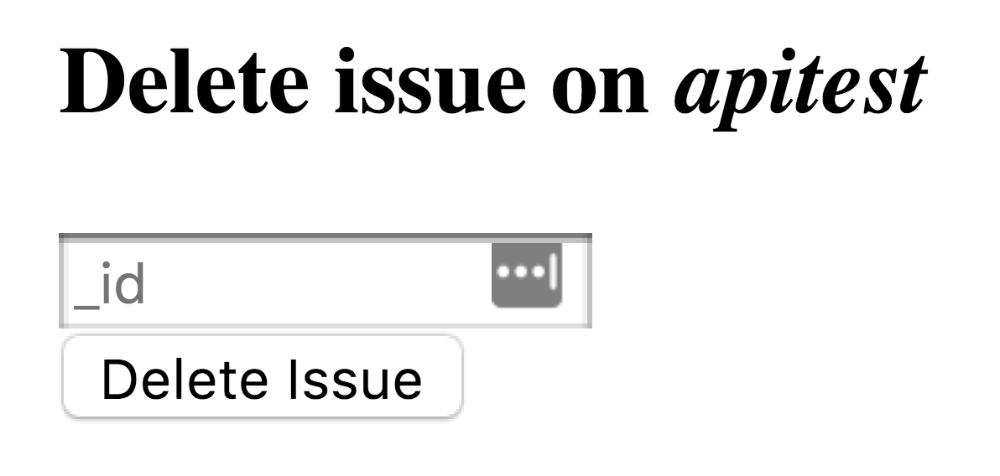
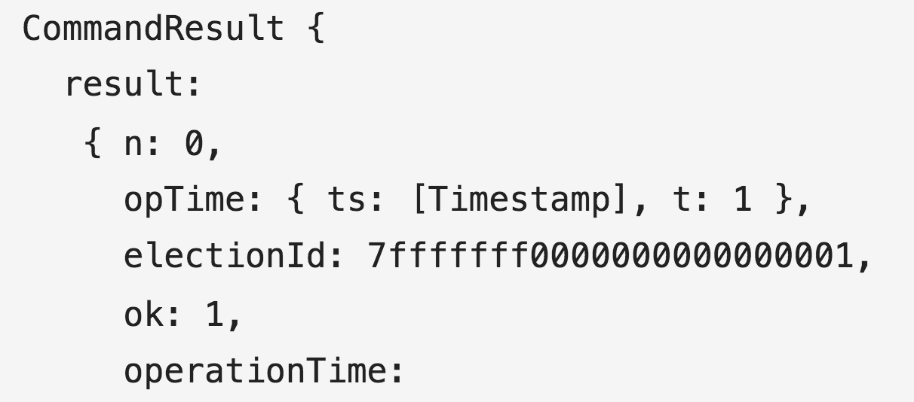

Project Journal: December 28, 2018
My progress on understanding the MongoClient.connect() Promise paid off today as I was able to
complete all but one of the remaining User Stories for the
Issue Tracker project from freeCodeCamp.
The last User story involves a task that I am relatively unfamiliar with: testing. I am to write 11 functional tests and have them pass before the project can be considered complete. I am giddy about doing this step as I think it will give me the confidence to plunge into and learn to navigate the world of testing--a much needed skill as I continue to work on more complex projects.
Oh that's why they created the abstraction
When I decided to write my database methods using the MongoDB Node driver directly, I expected some additional head-scratching since I was trading the efficiency and stability that Mongoose provided for a better understanding of MongoDB.
The experience matched my expecatations. The main hiccup I exprienced was with error handling. In the past, through different tutorials/exercises, I would use something like the following:
collection.deleteOne(query, opts, function(error, data) {
if (error) { console.log(error); }
})
For one reason or another, either because I was not running queries that caused errors, or Mongoose handled errors correctly, this used to work okay. Today, however, when I intentionally caused an error, I still received the success response.
In the Issue Tracker project, you can delete an issue by providing its ID in a form as such:

The _id provided by the user must be a 12-byte hexidecimal string. If it's not, I have the following in the .delete() router, where the regex is taken from mongodb source code:
// Check that issueId provided in the form is valid
let checkForHexRegExp = new RegExp('^[0-9a-fA-F]{24}$');
if (!checkForHexRegExp.test(id)) {
return res.send({
"error": "Please provide valid issue _id"
});
}
However, suppose the submitted _id passes the regex, but is not an ObjectId for one of the collection's documents.
Oddly enough, the value of error in my collection.find() callback was null.
The value of result, however, was not!

The ok property of the result object was also the succesful 1.
The key to identifying this error was the n property, which is the number of documents deleted.
Thus, to ensure that the client was given the correct response (success or failure), I used the following conditionals:
if (error || result.result.n == 0) {
message = 'could not delete ' + issueId;
}
if (result.result.n == 1 && result.result.ok == 1) {
message = 'deleted ' + issueId;
}
return callback(message);
There are probably better (more robust, more efficient) ways of writing this logic. I'll be testing its robustness tomorrow during testing.
skateboards turn into automobiles
I listened to another episode of Full Stack Radio today: Ben Orenstein - How to Build an App in a Week. This was a brilliant episode, where Ben discussed common hurdles developers face when creating an app, no matter how simple or complex it may be. Some paraphrased points from this episode that really moved/motivated me:
- We were well setup for the situation...and wanted to launch before the end of the trip
- Ben on creating trailmix.life during a week-long "codecation"
- Reducing the scope while still making a useful app
- You find yourself building all of this ancillary stuff before you get to the heart of the problem
- Start coding the thing that's impossible to do manually, then the next most annoying thing to do manually, and so on
- Don't handle edge cases and iceberg problems upfront, since that's when you understand your app the least
- Start with the 2-week version of the app (skateboard), not the 1 year version of it (automobile). Referencing this by Henrik Kniberg
I will be revisiting the Big Picture overview for one of my hobby projects with this new lens this weekend.